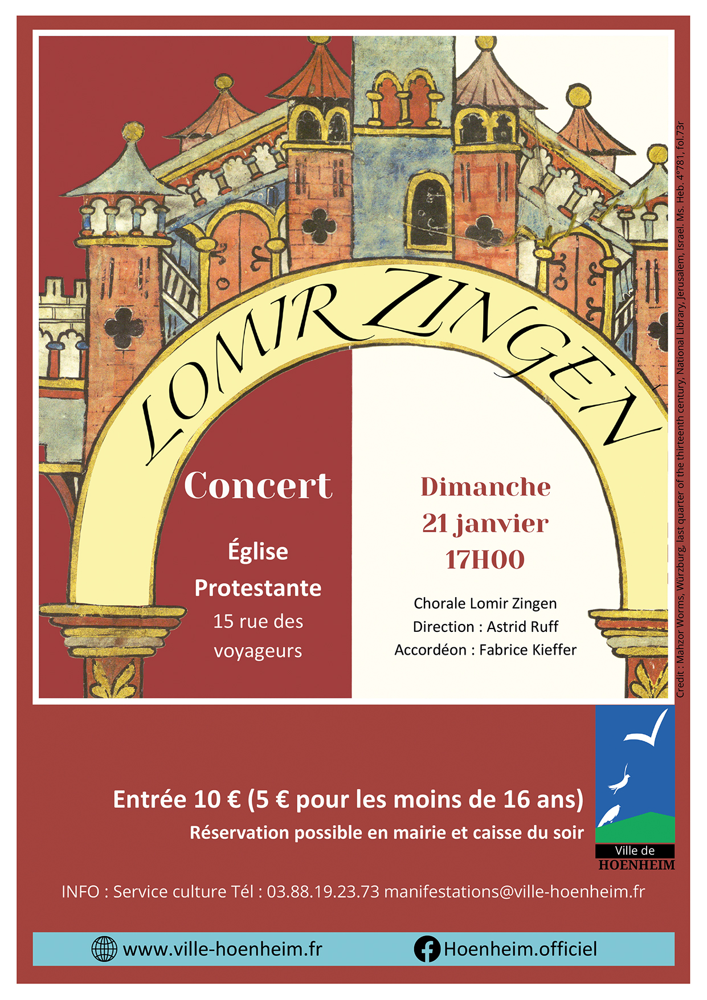

- Cet événement est terminé
Concert de la chorale Lomir Zingen
21 janvier 2024 à 17 h 00 min - 18 h 30 min
Navigation de l'événement

Rendez-vous au concert de chorale Lomir Zingen dimanche 21 janvier 2024 à 17h à l’église protestante 15 rue des Voyageurs à Hoenheim.
Présentation de la chorale
Après une carrière de chanteuse dans diverses langues dont le yiddish, Astrid Ruff a eu l’envie de partager son expérience, et a créé en 2012 la chorale « Lomir Zingen » (Let’s sing ! – Chantons !).
Le but de cette chorale est de faire connaître la culture yiddish dans sa richesse et sa diversité à travers la chanson. Ses concerts ne sont pas statiques, chacun derrière sa partition, mais dynamiques, alternant des textes d’introduction (en français) et des chansons, en yiddish, accompagnées par un accordéoniste.
Ce qui réunit les membres de cette chorale, c’est leur curiosité pour la culture yiddish, leur désir de se familiariser avec celle-ci. Les chanteurs sont des seniors ou des plus jeunes, juifs et non-juifs (goys). Parmi les membres, rares sont ceux qui connaissent le yiddish, mais ils connaissent d’autres langues germaniques, l’allemand ou l’alsacien. Certains sont musiciens, d’autres amateurs passionnés, la chorale accueille tout le monde, bras ouverts.
Ce concert comporte des chansons de différentes époques, de différents styles, de différentes ambiances.
Nous souhaitons qu’il émane de nos concerts de la joie et de la vie, que les spectateurs en sortent avec une mélodie dans la tête et dans le cœur.
Direction : Astrid Ruff
Accordéon : Fabrice Kieffer